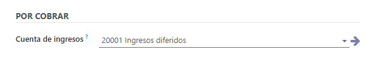
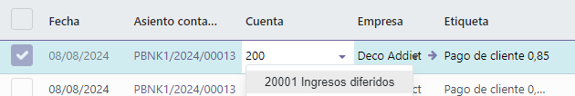
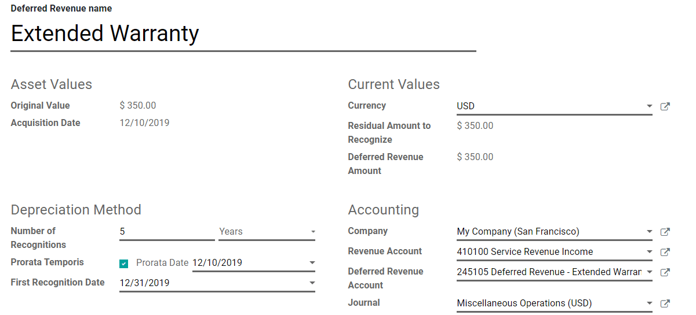
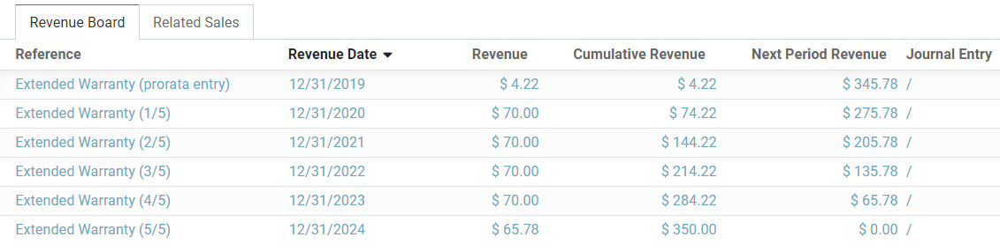
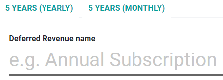

Deferred revenues¶
Deferred revenues, or unearned revenue, are payments made in advance by customers for products yet to deliver or services yet to render.
Such payments are a liability for the company that receives them since it still owes its customers these products or services. The company cannot report them on the current Profit and Loss statement, or Income Statement, since the payments will be effectively earned in the future.
These future revenues must be deferred on the company’s balance sheet until the moment in time they can be recognized, at once or over a defined period, on the Profit and Loss statement.
For example, let’s say we sell a five-year extended warranty for $ 350. We already receive the money now but haven’t earned it yet. Therefore, we post this new income in a deferred revenue account and decide to recognize it on a yearly basis. Each year, for the next 5 years, $ 70 will be recognized as revenue.
Odoo Accounting handles deferred revenues by spreading them in multiple entries that are automatically created in draft mode and then posted periodically.
Note
The server checks once a day if an entry must be posted. It might then take up to 24 hours before you see a change from draft to posted.
Prerequisites¶
Such transactions must be posted on a Deferred Revenue Account rather than on the default income account.
Configure a Deferred Revenue Account¶
To configure your account in the Chart of Accounts, go to , click on Create, and fill out the form.
Note
This account’s type must be either Current Liabilities or Non-current Liabilities
Post an income to the right account¶
Select the account on a draft invoice¶
On a draft invoice, select the right account for all the products of which the incomes must be deferred.

Choose a different Income Account for specific products¶
Start editing the product, go to the Accounting tab, select the right Income Account, and save.
Tip
It is possible to automate the creation of revenue entries for these products (see: Automate the Deferred Revenues).
Change the account of a posted journal item¶
To do so, open your Sales Journal by going to , select the journal item you want to modify, click on the account, and select the right one.
Deferred Revenues entries¶
Create a new entry¶
A Deferred Revenues entry automatically generates all journal entries in draft mode. They are then posted one by one at the right time until the full amount of the income is recognized.
To create a new entry, go to , click on Create, and fill out the form.
Click on select related purchases to link an existing journal item to this new entry. Some fields are then automatically filled out, and the journal item is now listed under the Related Sales tab.
Once done, you can click on Compute Revenue (next to the Confirm button) to generate all the values of the Revenue Board. This board shows you all the entries that Odoo will post to recognize your revenue, and at which date.
What does “Prorata Temporis” mean?¶
The Prorata Temporis feature is useful to recognize your revenue the most accurately possible.
With this feature, the first entry on the Revenue Board is computed based on the time left between the Prorata Date and the First Recognition Date rather than the default amount of time between recognitions.
For example, the Revenue Board above has its first revenue with an amount of $ 4.22 rather than $ 70.00. Consequently, the last entry is also lower and has an amount of $ 65.78.
Deferred Entry from the Sales Journal¶
You can create a deferred entry from a specific journal item in your Sales Journal.
To do so, open your Sales Journal by going to , and select the journal item you want to defer. Make sure that it is posted in the right account (see: Change the account of a posted journal item).
Then, click on Action, select Create Deferred Entry, and fill out the form the same way you would do to create a new entry.

Deferred Revenue Models¶
You can create Deferred Revenue Models to create your Deferred Revenue entries faster.
To create a model, go to , click on Create, and fill out the form the same way you would do to create a new entry.
Tip
You can also convert a confirmed Deferred Revenue entry into a model by opening it from and then, by clicking on the button Save Model.
Apply a Deferred Revenue Model to a new entry¶
When you create a new Deferred Revenue entry, fill out the Deferred Revenue Account with the right recognition account.
New buttons with all the models linked to that account appear at the top of the form. Clicking on a model button fills out the form according to that model.
Automate the Deferred Revenues¶
When you create or edit an account of which the type is either Current Liabilities or Non-current Liabilities, you can configure it to defer the revenues that are credited on it automatically.
You have three choices for the Automate Deferred Revenue field:
No: this is the default value. Nothing happens.
Create in draft: whenever a transaction is posted on the account, a draft Deferred Revenues entry is created, but not validated. You must first fill out the form in .
Create and validate: you must also select a Deferred Revenue Model (see: Deferred Revenue Models). Whenever a transaction is posted on the account, a Deferred Revenues entry is created and immediately validated.
Tip
You can, for example, select this account as the default Income Account of a product to fully automate its sale. (see: Choose a different Income Account for specific products).